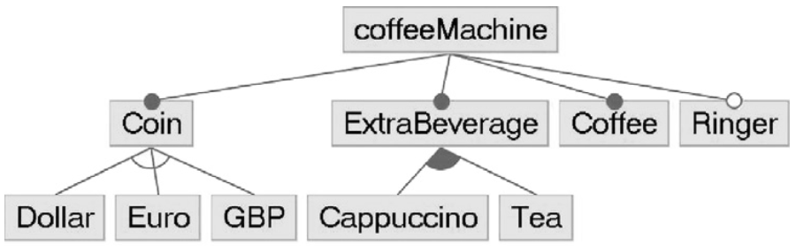

↤
TooDY, a Tool for Detecting variabilitY
↦
Caso di studio: Coffee Vending-Machine
-
R1. After inserting a suitable coin, the user shall choose a beverage and select the amount of sugar.
-
R2. The machine shall offer, as beverages, coffee and cappuccino or tea.
-
R3. The machine shall always offer coffee.
-
R4. A ringtone possibly has to be played after beverage delivery.
-
R5. After the beverage is taken, the machine returns idle.
